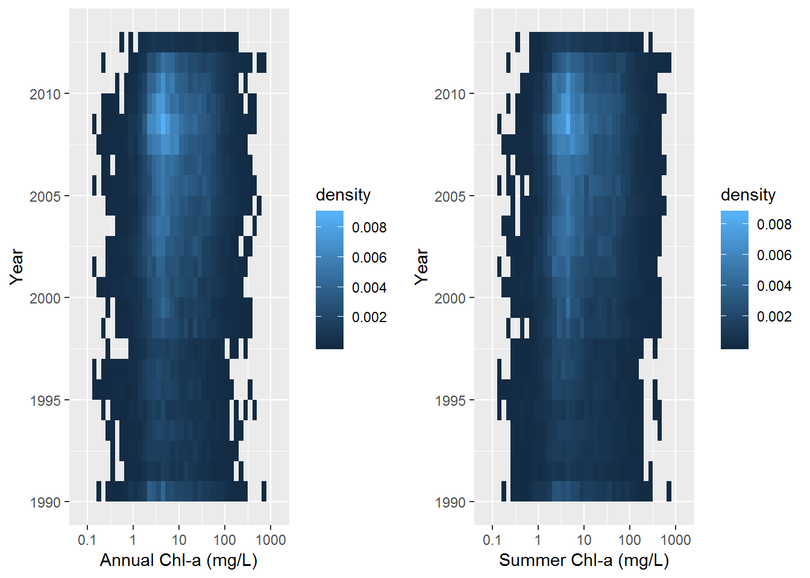

Investigation of the eutrophication trends in the united states’ northeastern and midwestern lakes
Hamed Khorasani
Introduction
Lake eutrophication, by nature, is the process of lake aging in which the lakes are filled with sediments and the settlement of dead flora and fauna in the lake bottom. Nowadays, anthropogenic eutrophication is the accelerated process in which excess amount of nutrients from human activities stimulate the aquatic plants’ growth and increase the lake productivity. Some researchers have argued that the past efforts to reduce the entrance of nutrients into rivers and lakes have not necessarily resulted in improved water quality (e.g. Oliver et al. 2017). The following graph supports this claim: 
However, lake restoration is supposed to take several decades for most lakes to show results. Also, the aim of some actions for lake management is to enhance water quality during the warm season when the lake productivity is higher due to the higher temperature of the lake. The main aim of this study is to investigate the intra-annual trends of lake ecological conditions.
Materials and methods
In order to investigate the trends of lake eutrophication, the LAke multi-scaled GeOSpatioal and temporal database LAGOS is used. The LAGOSNE package is composed of the data from 51101 lakes and reservoirs in lake-rich areas of the US (Soranno et al., 2017 and Stachelek et al., 2017). The first step is to load the packages as follows:
library(LAGOSNE)
library(dplyr)
library(tidyr)
library(ggplot2)
library(gridExtra)The LAGOSNE package will be used for downloading the data into a local variable as follows:
Dbase <- lagosne_load(version = "1.087.1")where the downloaded database Dbase is a very big and complex data frame. Thus, it is useful to extract a smaller database of the data that are going to be used for drawing the results.
summer_epi_nut <- Dbase$epi_nutr %>%
select(lagoslakeid,chla,sampleyear,samplemonth) %>%
filter(sampleyear>=1990) %>%
filter(samplemonth %in% c(7,8,9)) %>%
group_by(lagoslakeid,sampleyear) %>%
summarize(meansummerchl=mean(chla)) %>%
mutate(logval=log10(meansummerchl))annual_epi_nut <- Dbase$epi_nutr %>%
select(lagoslakeid,chla,sampleyear,samplemonth) %>%
filter(sampleyear>=1990) %>%
group_by(lagoslakeid,sampleyear) %>%
summarize(meanannualchl=mean(chla)) %>%
mutate(logval=log10(meanannualchl))It is noteworthy to mention that most of the variables in the multi-lake databases have a lognormal distribution rather than a normal distribution (Hakanson and Boullion, 2002); thus, it is recommended to use the log10 transformation for modelling or visualization.
Results
In order to find out if the result of previous studies that the ecological condition of US lakes has not improved during the last two decades and in order to check if this conclusion is not a result of using annual chl-a concentration instead of only summer chl-a concentration, the following graph is used:
plot1 <- ggplot(na.omit(annual_epi_nut), aes(x= logval, y=sampleyear))+
stat_bin2d(aes(fill = stat(density)), binwidth = c(.1,1)) +
scale_x_continuous(limits = c(-1,3), expand = c(0.1, 0), breaks = c(-1,0,1,2,3), labels = c('0.1','1','10', '100', '1000')) +
labs(x="Annual Chl-a (mg/L)", y= "Year")
plot2 <- ggplot(na.omit(summer_epi_nut), aes(x= logval, y=sampleyear)) +
stat_bin2d(aes(fill = stat(density)), binwidth = c(.1,1)) +
scale_x_continuous(limits = c(-1,3), expand = c(0.1, 0), breaks = c(-1,0,1,2,3), labels = c('0.1','1','10', '100', '1000')) +
labs(x="Summer Chl-a (mg/L)", y= "Year")
grid.arrange(plot1, plot2, nrow=1)
Based on the drawn density estimates, it seems that the trend of annual chl-a in lakes, is not much different from the summer chl-a concentrations.
Conclusions
as a result, it is safe to conclude that the previous findings are correct and during the past two decades, US lakes ecological conditions have not improved significantly.
References
*Hakanson, L., V.V. Boulion. 2002. The Lake Foodweb: Modelling Predation and Abiotic/biotic Interactions. Backhuys Publishers. 344p
Oliver, S.K., S.M. Collins, P.A. Soranno, T. Wagner, E.H. Stanley, J.R. Jones, C.A. Stow, N.R. Lottig. 2017. Unexpected stasis in a changing world: Lake nutrient andchlorophyll trends since 1990. Global Change Biology 23
Soranno, P.A., L.C. Bacon, M. Beauchene, K.E. Bednar, E.G. Bissell, C.K. Boudreau, M.G. Boyer, M.T. Bremigan, S.R. Carpenter, J.W. Carr, K.S. Cheruvelil, S.T. Christel, M. Claucherty, S.M. Collins, J.D. Conroy, J.A. Downing, J. Dukett, C.E. Fergus, C.T. Filstrup, C. Funk, M.J. Gonzalez, L.T. Green, C. Gries, J.D. Halfman, S.K. Hamilton, P.C. Hanson, E.N. Henry, E.M. Herron, C. Hockings, J.R. Jackson, K. Jacobson-Hedin, L.L. Janus, W.W. Jones, J.R. Jones, C.M. Keson, K.B.S. King, S.A. Kishbaugh, J.-F. Lapierre, B. Lathrop, J.A. Latimore, Y. Lee, N.R. Lottig, J.A. Lynch, L.J. Matthews, W.H. McDowell, K.E.B. Moore, B.P. Neff, S.J. Nelson, S.K. Oliver, M.L. Pace, D.C. Pierson, A.C. Poisson, A.I. Pollard, D.M. Post, P.O. Reyes, D.O. Rosenberry, K.M. Roy, L.G. Rudstam, O. Sarnelle, N.J. Schuldt, C.E. Scott, N.K. Skaff, N.J. Smith, N.R. Spinelli, J.J. Stachelek, E.H. Stanley, J.L. Stoddard, S.B. Stopyak, C.A. Stow, J.M. Tallant, P.-N. Tan, A.P. Thorpe, M.J. Vanni, T. Wagner, G. Watkins, K.C. Weathers, K.E. Webster, J.D. White, M.K. Wilmes, S. Yuan. 2017. LAGOS-NE: A multi-scaled geospatial and temporal database of lake ecological context and water quality for thousands of U.S. lakes. Gigascience 6(12) https://doi.org/10.1093/gigascience/gix101
Stachelek J., Oliver S.K., Masrour F. 2017. LAGOS: R interface to the LAke multi-scaled GeOSpatial & temporal database. R package version 1.0.0. https://CRAN.R-project.org/package=LAGOSNE